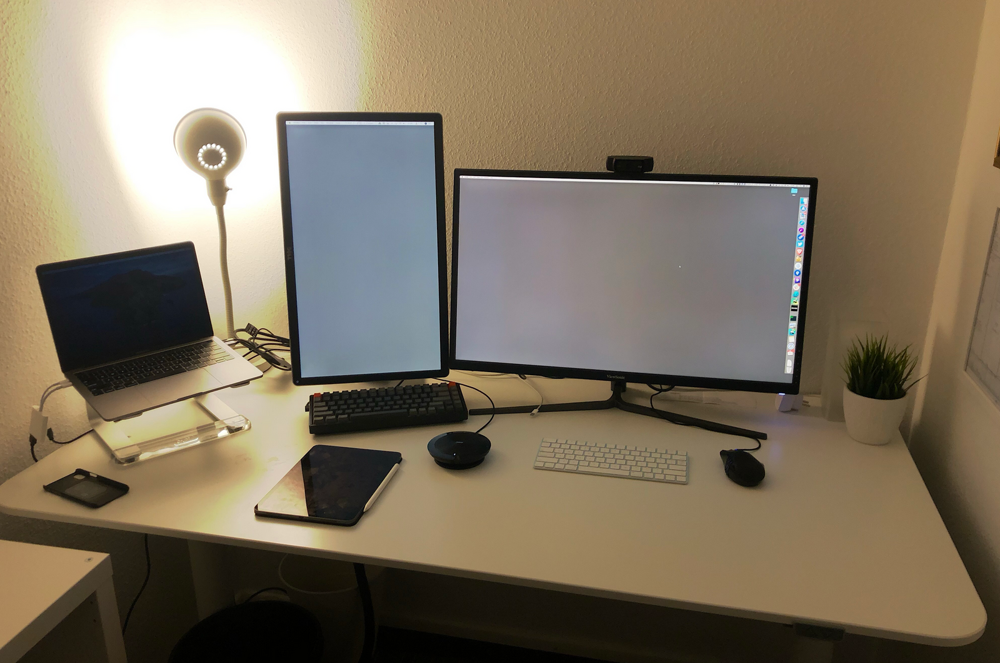

Four weeks of home office

On March 12th we decided to send everybody into Home office. We were partially already working remotely but we never tried to be 100%. Now we were forced to.
As a summary: It works better than I expected. The remote work is not as much as a problem for everybody. Being stuck at home is.
Tools (don’t fix problems)
We already had bits and pieces in place to enable remote collaboration. We already used Slack, Google Hangouts, G-Suite, Asana, Jira, and Confluence. Hangouts is essential for sharing the Desktop or an App for things like core reviews. We added just recently miro.com to the mix as a whiteboard replacement. So far, we are happy with that setup. On the equipment side I am lucky that I have a room in my house as my office. Very quickly after we started working remotely, I ordered a Logitech C920 Webcam. For Audio I use a Jabra Speak 510. Using headphones all the time is possible but with that it is much better. Having a standing desk really helps me to get some movement during the day.
The normal day
I’m getting up at around 5am. Sometimes this work better, sometimes not so much. It feels like I’m getting used to it. The mornings have very productive hours. I am doing that so I can at around 10am (when the kids got up) do some home schooling with them. I reserve 3hours for that which I not always need. At 1pm latest I get back to work. I know it can be disturbing when I call people without a warning, so I try to ask them on Slack before. We also synchronise our Google Calendar with Slack so we see if somebody has a meeting and we only disturb that person if it is urgent. I’m a believer of focused work and any distraction costs time and energy. In general, video calls do work well for us. Where we might need to improve is written, good documentation about meetings so everybody has a chance to get the information.
Sport
I try to exercise every day. My fitness tracker keeps telling me that I need to do something every day. So, either in the morning or after dinner I usually step on my cross-trainer or do trainings with Fitbit Coach to not get out of shape while staying at home. I’m on a 354-day streak for getting my imaginary fitness tracker points, which is a good motivation for me.
One on Ones
I do my one on ones even remotely. We talk about the same stuff as before. Back in the office we took a walk for about one hour. Now I do a mix of ‘just’ chatting over video and booth of us walking around our neighbourhood and talking about the phone. I really like both options.
Kaffeeklatsch
A couple of days ago a colleague had the idea to have a virtual Kaffeeklatsch (well, Watercooler) meeting. We all got together in front of our computers, some got cake, or sat in the garden and we talk about everything and nothing. I really liked that because I got to know some new things about my colleagues I did now know. This helps to get to know each other a bit better and builds trust and relationship in the company.
I am aware that I’m privileged. I can work out of my place in the same way as before. I work in IT. There are many people who are not that lucky. I will not complain about the unimportant things which are ‘just’ annoying. With that in mind: Corona did not affect me in a big way so far. Yes, we must make sure our kids learn something, my daughter needs to get a good grade to get to the next school next year. My son must learn to read. My wife also works at home. We will manage all of that somehow. My family and I are still healthy, and we are getting our way through these times.
All the best and stay healthy. ♥️